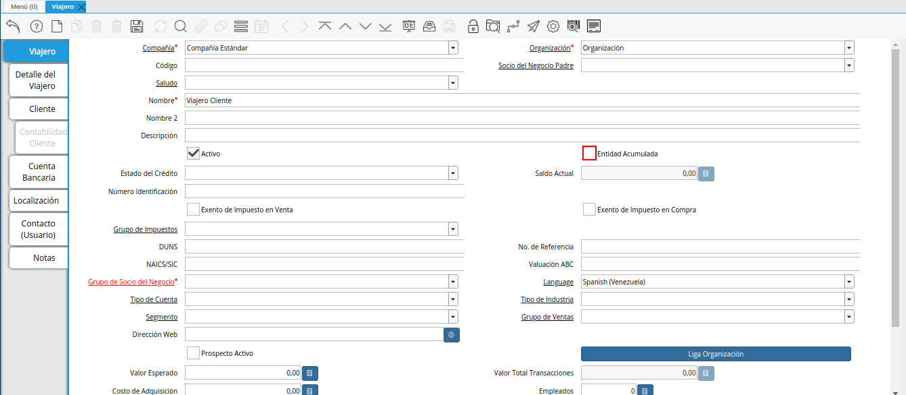
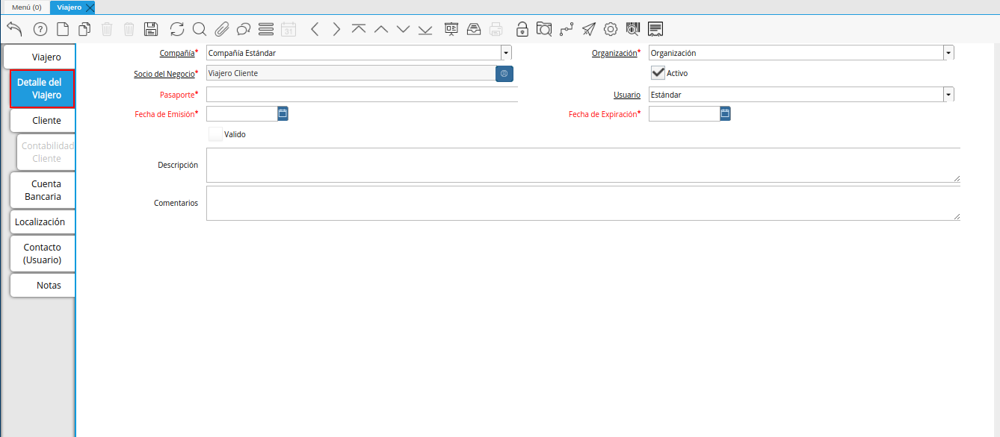
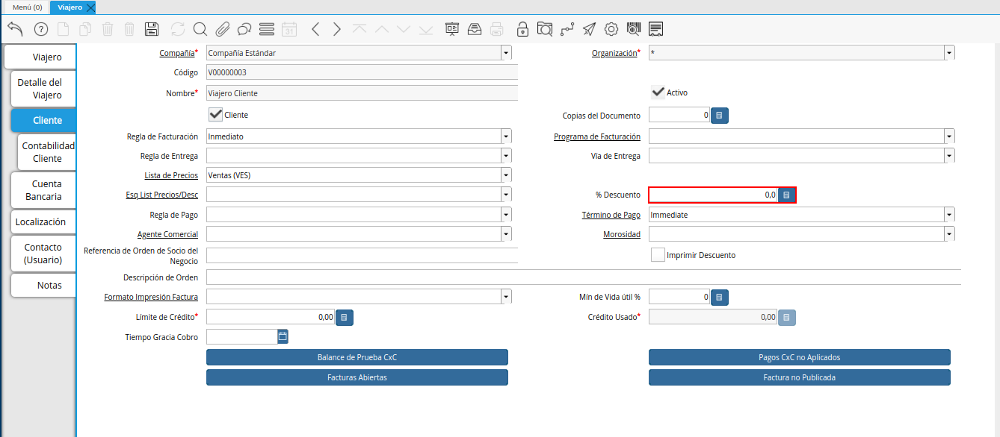
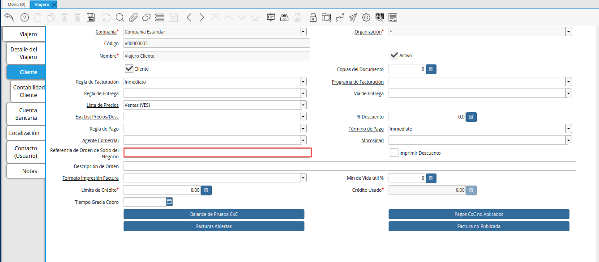

2.3.1. Registro de Viajero¶
Ubique y seleccione en el menú de ADempiere, la carpeta “Administración de Agencia de Viajes”, luego seleccione la ventana “Viajero”.

Imagen 1. Menú de ADempiere
Podrá visualizar la ventana “Viajero”, con todos los registros de los socios del negocio que cumplen con el rol de cliente viajero. La información ingresada en esta ventana es visualizada en la ventana “Socio del Negocio” y viceversa.

Imagen 2. Ventana Viajero
Seleccione el icono “Registro Nuevo”, ubicado en la barra de herramientas de ADempiere y proceda al llenado de los campos correspondientes.

Imagen 3. Icono Registro Nuevo
Seleccione en el campo “Organización”, la organización para la cual se encuentra realizando el registro del socio del negocio cliente viajero.

Imagen 4. Campo Organización
Introduzca en el campo “Código”, el código del cliente viajero que se encuentra registrando. El mismo no debe contener guiones (-), ni puntos (.).
Note
Si no es ingresado ningún valor en este campo, al guardar el registro ADempiere asigna de manera automática un código según la secuencia de registros que se tenga en el momento. La información de este campo, es cargada de manera automática en el campo “Número Identificación” o viceversa.

Imagen 5. Campo Código
Seleccione en el campo “Socio del Negocio Padre”, el socio del negocio padre del cliente viajero que se encuentra registrando.

Imagen 6. Campo Socio del Negocio Padre
Introduzca en el campo “Nombre”, el nombre del cliente viajero que se encuentra registrando.

Imagen 7. Campo Nombre
Introduzca en el campo “Nombre 2”, el nombre dos (2) del cliente viajero que se encuentra registrando.

Imagen 8. Campo Nombre 2
Introduzca en el campo “Descripción”, una breve descripción del registro que se encuentra registrando.

Imagen 9. Campo Descripción
Tilde el check “Entidad Acumulada”, para indicar como entidad acumulada el registro que se encuentra realizando.

Imagen 10. Check Entidad Acumulada
Seleccione en el campo “Estado de Crédito”, el estado de crédito del registro que se encuentra realizando.

Imagen 11. Campo Estado de Crédito
En el campo “Saldo Actual”, podrá visualizar el saldo actual del registro que se encuentra realizando.

Imagen 12. Campo Saldo Actual
En el campo “Número Identificación”, podrá visualizar la información ingresada en el campo “Código” o viceversa. El mismo no debe contener guiones (-), ni puntos (.).

Imagen 13. Campo Número Identificación
Tilde el check “Exento de Impuesto en Venta”, para indicar como exento de impuesto en venta el registro que se encuentra realizando.

Imagen 14. Check Exento de Impuesto en Venta
Tilde el check “Exento de Impuesto en Compra”, para indicar como exento de impuesto en compra el registro que se encuentra realizando.

Imagen 15. Check Exento de Impuesto en Compra
Seleccione en el campo “Grupo de Impuestos”, el grupo de impuestos para el registro que se encuentra realizando.

Imagen 16. Campo Grupo de Impuestos
Introduzca en el campo “DUNS”, el DUNS del registro que se encuentra realizando.

Imagen 17. Campo DUNS
Introduzca en el campo “No. de Referencia”, el número de referencia para el registro que se encuentra realizando.

Imagen 18. Campo No. de Referencia
Introduzca en el campo “NAICS/SIC”, el NAICS/SIC del registro que se encuentra realizando.

Imagen 19. Campo NAICS/SIC
Introduzca en el campo “Valuación ABC”, la valuación abc del registro que se encuentra realizando.

Imagen 20. Campo Valuación ABC
Seleccione en el campo “Grupo de Socio del Negocio”, el grupo de socio del negocio al que pertene el cliente viajero que se encuentra registrando.

Imagen 21. Campo Grupo de Socio del Negocio
Seleccione en el campo “Idioma”, el idioma para el registro que se encuentra realizando.

Imagen 22. Campo Idioma
Seleccione en el campo “Tipo de Cuenta”, el tipo de cuenta para el registro que se encuentra realizando.

Imagen 23. Campo Tipo de Cuenta
Seleccione en el campo “Tipo de Industria”, el tipo de industria para el registro que se encuentra realizando.

Imagen 24. Campo Tipo de Industria
Seleccione en el campo “Segmento”, el segmento para el registro que se encuentra realizando.

Imagen 25. Campo Segmento
Seleccione en el campo “Grupo de Ventas”, el grupo de ventas para el registro que se encuentra realizando.

Imagen 26. Campo Grupo de Ventas
Introduzca en el campo “Dirección Web”, la dirección web del registro que se encuentra realizando.

Imagen 27. Campo Dirección Web
Tilde el check “Prospecto Activo”, para indicar como prospecto activo el registro que se encuentra realizando.

Imagen 28. Check Prospecto Activo
El check “Cliente” se encuentra tildado por defecto, indicando como cliente el registro que se encuentra realizando.

Imagen 29. Check Cliente
Seleccione el icono “Guardar Cambios”, ubicado en la barra de herramientas de ADempiere para guardar el registro de los campos de la pestaña principal “Viajero”.

Imagen 30. Icono Guardar
Seleccione la pestaña “Detalle del Viajero” y proceda al llenado de los campos correspondientes.

Imagen 31. Pestaña Detalle del Viajero
Note
En esta pestaña se agrega la información de referente al pasaporte del viajero y los datos fiscales del pasaporte.
Introduzca en el campo “Pasaporte”, el pasaporte del cliente viajero que se encuentra registrando.

Imagen 32. Campo Pasaporte
En el campo “Usuario”, podrá visualizar el usuario que se encuentra realizando el registro del cliente viajero.

Imagen 33. Campo Usuario
Seleccione en el campo “Fecha de Emisión”, la fecha de emisión del pasaporte ingresado en el campo “Pasaporte”.

Imagen 34. Campo Fecha de Emisión
Seleccione en el campo “Fecha de Expiración”, la fecha de expiración del pasaporte ingresado en el campo “Pasaporte”.

Imagen 35. Campo Fecha de Expiración
Introduzca en el campo “Descripción”, una breve descripción referente al registro que se encuentra realizando.

Imagen 36. Campo Descripción
Seleccione el icono “Guardar Cambios”, ubicado en la barra de herramientas de ADempiere para guardar el registro de los campos de la pestaña “Detalle del Viajero”.

Imagen 37. Icono Guardar Cambios
Seleccione la pestaña “Cliente” y proceda al llenado de los campos correspondientes.

Imagen 38. Pestaña Cliente
Tilde el check “Cliente”, para indicar que se esta realizando el registro de un cliente.

Imagen 39. Check Cliente
Introduzca en el campo “Copias del Documento”, el número de copias a ser impresas.

Imagen 40. Campo Copias del Documento
Seleccione en el campo “Regla de Facturación”, la regla de facturación para el registro que se encuentra realizando.

Imagen 41. Campo Regla de Facturación
Seleccione en el campo “Programa de Facturación”, el programa de facturación para el registro que se encuentra realizando.

Imagen 42. Campo Programa de Facturación
Seleccione en el campo “Regla de Entrega”, la regla de entrega para el registro que se encuentra realizando.

Imagen 43. Campo Regla de Entrega
Seleccione en el campo “Vía de Entrega”, la vía de entrega para el registro que se encuentra realizando.

Imagen 44. Campo Vía de Entrega
Seleccione en el campo “Lista de Precios”, la lista de precios para el registro que se encuentra realizando.

Imagen 45. Campo Lista de Precios
Seleccione en el campo “Esq List Precios/Desc”, el esquema de lista de precios de descuento para el registro que se encuentra realizando.

Imagen 46. Campo Esq List Precios/Desc
Introduzca en el campo “% Descuento”, el porcentaje (%) de descuento para el registro que se encuentra realizando.

Imagen 47. Campo Porcentaje de Descuento
Seleccione en el campo “Regla de Pago”, la regla de pago para el registro que se encuentra realizando.

Imagen 48. Campo Regla de Pago
Seleccione en el campo “Término de Pago”, el término de pago para el registro que se encuentra realizando.

Imagen 49. Campo Término de Pago
Seleccione en el campo “Agente Comercial”, el agente comercial para el registro que se encuentra realizando.

Imagen 50. Campo Agente Comercial
Seleccione en el campo “Morosidad”, la morosidad para el registro que se encuentra realizando.

Imagen 51. Campo Morosidad
Introduzca en el campo “Referencia de Orden de Socio del Negocio”, la referencia de orden de socio del negocio para el registro que se encuentra realizando.

Imagen 52. Campo Referencia de Orden de Socio del Negocio
Tilde el check “Imprimir Descuento”, para imprimir el descuento en la factura y la orden.

Imagen 53. Check Imprimir Descuento
Introduzca en el campo “Descripción de Orden”, una breve descripción de orden del registro que se encuentra realizando.

Imagen 54. Campo Descripción de Orden
Seleccione en el campo “Formato Impresión Factura”, el formato de impresión de factura para el registro que se encuentra realizando.

Imagen 55. Campo Formato Impresión Factura
Introduzca en el campo “Mín de Vida útil %”, tiempo mínimo de vida útil que tienen los productos.

Imagen 56. Campo Mínimo de Vida útil %
Introduzca en el campo “Límite de Crédito”, el límite de crédito establecido para el registro que se encuentra realizando.

Imagen 57. Campo Límite de Crédito
Podrá visualizar en el campo “Crédito Usado”, el crédito usado por el registro que se encuentra realizando.

Imagen 58. Campo Crédito Usado
Introduzca en el campo “Tiempo Gracia Cobro”, los días de gracia que tiene el socio del negocio antes de que el agente comercial le realice el cobro.

Imagen 59. Campo Tiempo Gracia
Seleccione el icono “Guardar Cambios”, ubicado en la barra de herramientas de ADempiere para guardar el registro de los campos de la pestaña “Cliente”.

Imagen 60. Icono Guardar Cambios